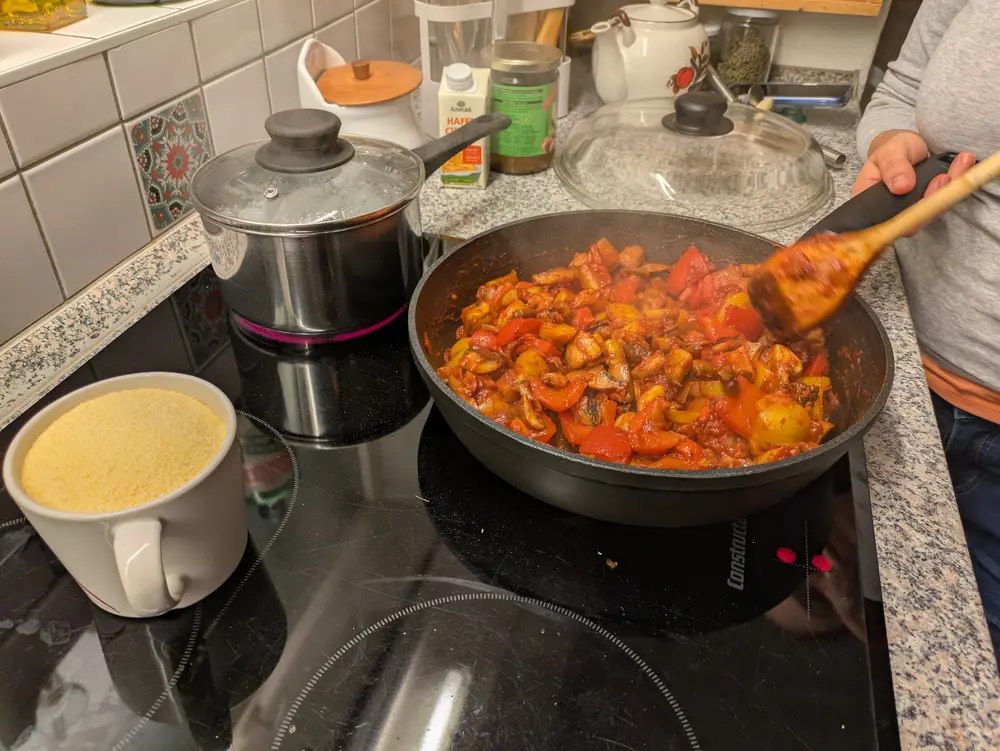

Recipe | Champignon ragout

Champignon ragout
From Maria
Ingredients
For 4 people:
- 500 g fresh mushrooms
- 2 small onions
- 1 clove of garlic
- 2 bell peppers (ideally red & yellow)
- 150 ml concentrated tomato paste
- 4-5 tablespoons olive oil
- bell pepper powder
- salt & pepper
- thyme
- polenta (see polenta page)
Steps
- Clean the onion and garlic, cut into cubes and cook in olive oil for 5 minutes.
- Add the chopped bell peppers and mushrooms (cut into big pieces). Let them simmer covered in their own juice for 10 minutes.
- Then add the tomato paste, season with bell pepper powder, thyme, salt and pepper to taste and cook at low heat for 10 minutes (optional: put in the oven).
- Serve the ragout with the polenta and enjoy!